Los Angeles Lakers es uno de los equipos más emblemáticos de la NBA, con una rica historia de éxito en el baloncesto profesional.
| Foto | Jugador | Partidos Jugados | Récord de Puntos | Récord de Asistencias |
|---|---|---|---|---|
| 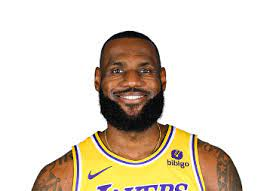 | LeBron James | 1300 | 61 puntos | 15 asistencias |
| 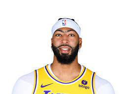 | Anthony Davis | 600 | 48 puntos | 10 asistencias |
Los Brooklyn Nets son uno de los equipos más competitivos en la NBA en la actualidad, con un destacado roster lleno de talento.
| Foto | Jugador | Partidos Jugados | Récord de Puntos | Récord de Asistencias |
|---|---|---|---|---|
| 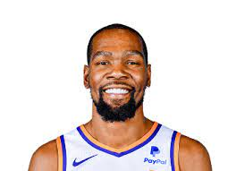 | Kevin Durant | 800 | 55 puntos | 12 asistencias |
| 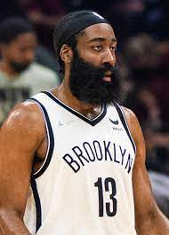 | James Harden | 700 | 58 puntos | 14 asistencias |
Los Golden State Warriors son conocidos por su estilo de juego rápido y sus tiros de tres puntos de alto nivel.
| Foto | Jugador | Partidos Jugados | Récord de Puntos | Récord de Asistencias |
|---|---|---|---|---|
| 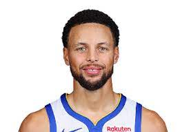 | Stephen Curry | 850 | 62 puntos | 13 asistencias |
| 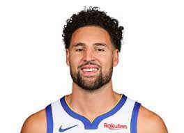 | Klay Thompson | 600 | 54 puntos | 11 asistencias |
Los Milwaukee Bucks son un equipo de baloncesto profesional con sede en Milwaukee, Wisconsin. Han ganado varios campeonatos de la NBA a lo largo de su historia.
| Foto | Jugador | Partidos Jugados | Récord de Puntos | Récord de Asistencias |
|---|---|---|---|---|
| 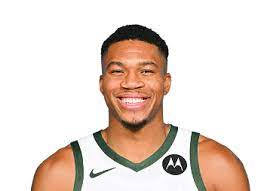 | Giannis Antetokounmpo | 600 | 60 puntos | 11 asistencias |
| 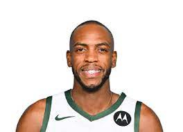 | Khris Middleton | 700 | 52 puntos | 9 asistencias |
Los Los Angeles Clippers son un equipo de baloncesto profesional con sede en Los Ángeles, California. Han sido un contendiente en la NBA en los últimos años.
| Foto | Jugador | Partidos Jugados | Récord de Puntos | Récord de Asistencias |
|---|---|---|---|---|
| 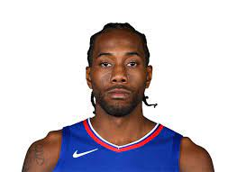 | Kawhi Leonard | 600 | 57 puntos | 10 asistencias |
| 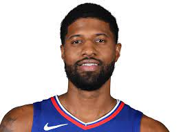 | Paul George | 650 | 55 puntos | 12 asistencias |
Los Philadelphia 76ers son uno de los equipos más antiguos y exitosos de la NBA, con múltiples campeonatos de la NBA en su historia.
| Foto | Jugador | Partidos Jugados | Récord de Puntos | Récord de Asistencias |
|---|---|---|---|---|
| 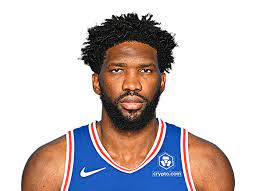 | Joel Embiid | 450 | 58 puntos | 13 asistencias |
| 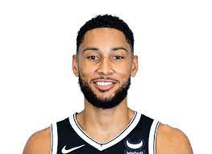 | Ben Simmons | 400 | 52 puntos | 15 asistencias |
Utah Jazz es un equipo de baloncesto profesional con sede en Salt Lake City, Utah. Han tenido temporadas exitosas en la NBA y cuentan con una sólida base de aficionados.
| Foto | Jugador | Partidos Jugados | Récord de Puntos | Récord de Asistencias |
|---|---|---|---|---|
| 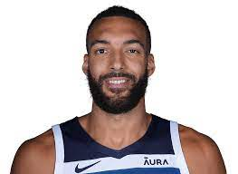 | Rudy Gobert | 600 | 48 puntos | 8 asistencias |
| 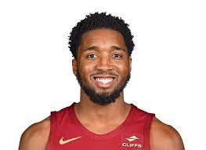 | Donovan Mitchell | 550 | 55 puntos | 10 asistencias |
Los Phoenix Suns son un equipo de baloncesto profesional con sede en Phoenix, Arizona. Han tenido éxito en temporadas anteriores y han sido contendientes en la NBA.
| Foto | Jugador | Partidos Jugados | Récord de Puntos | Récord de Asistencias |
|---|---|---|---|---|
 |
Devin Booker | 600 | 56 puntos | 11 asistencias |
| 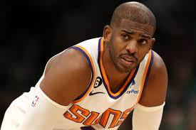 | Chris Paul | 700 | 54 puntos | 14 asistencias |